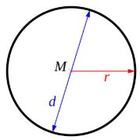
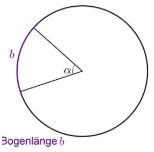

Kreisberechnungen
Wichtige Begriffe
- Mittelpunkt (M) → Die Mitte des Kreises
- Radius (r) → Strecke vom Mittelpunkt zum Rand
- Durchmesser (d) → Strecke von Rand zu Rand durch den Mittelpunkt
- π (Pi) → ungefähr 3,14
Zusammenhang: $d = 2r$
Umfang eines Kreises
Formel:
$U = 2 \pi r$ oder $U = \pi d$
Beispiel
Gegeben: $r = 5$ cm
Rechnung: $U = 2 \cdot \pi \cdot 5 \approx 31{,}4$ cm
Antwort: Der Umfang beträgt ca. 31,4 cm.

Fläche eines Kreises
Formel:
$A = \pi r^2$
Beispiel
Gegeben: $d = 12$ cm → $r = 6$ cm
Rechnung: $A = \pi \cdot 6^2 \approx 113{,}1 \text{ cm}^2$
Antwort: Die Fläche beträgt ca. 113,1 cm².
Kreisbogen
b = Bogenlänge
α = Zentriwinkel
Formel:
$b = \frac{\alpha}{360^\circ} \cdot 2 \pi r$
Beispiel
Ergebnis: $b \approx 10{,}47$ cm

Kreissektor
Ein Kreissektor ist ein Teil eines Kreises.
Formel:
$A_s = \frac{\alpha}{360^\circ} \cdot \pi r^2$
Beispiel
Ergebnis: $A_s \approx 6{,}28 \text{ cm}^2$
Tipps
- Umfang und Kreisbogen → Länge (kein Quadrat)
- Fläche und Sektor → immer cm²
- Zentriwinkel immer in Grad einsetzen
- Skizze hilft oft beim Verstehen
- Fehlende Werte zuerst berechnen (z. B. Radius)